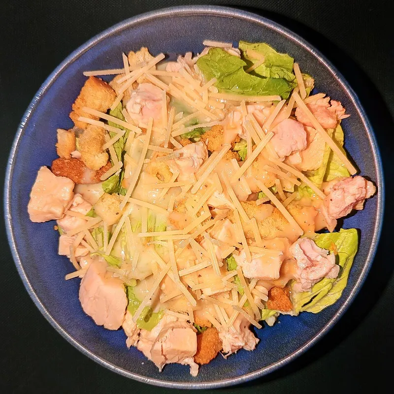
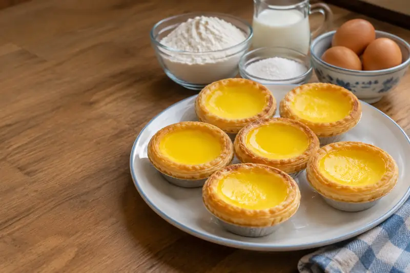
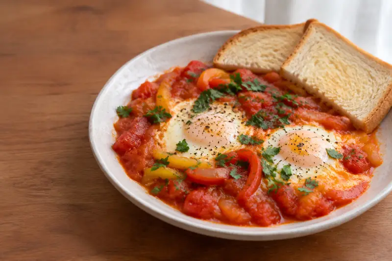
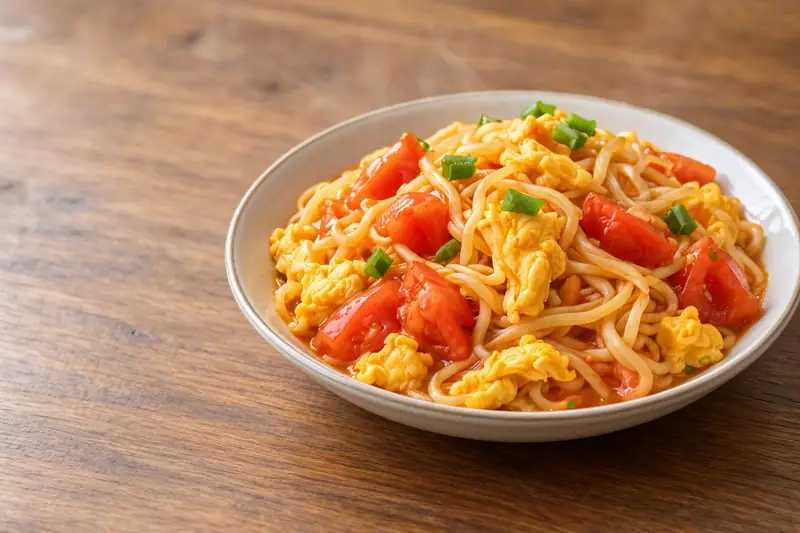

Eggs and dairy蛋奶
Eggs鸡蛋
seen on costco.ca or in the Surrey warehouse listingCostco 目录/仓库可见
At Costco在 Costco
Typical pack常见规格: Large eggs, 24-count or 30-count trays大号鸡蛋，24 或 30 个一盘
Price varies; check the warehouse or costco.ca.价格随时变化，请看仓库或 costco.ca。
Sample date取样日期 2026-11-16. Availability varies by warehouse and season; this is not a stock guarantee.有无因门店和季节而异，不是库存保证。
Store and portion储存与分装
Keep in the body of the fridge, not the door, about 4-5 weeks; hard-boiled eggs in shell keep 1 week.冷藏放主体部分而不是门上，约 4–5 周；煮熟的蛋带壳放 1 周。
If you buy 24-30, beat the extras and freeze them (about 50 g per egg); they keep about a year.一次买 24–30 个的话，把用不完的打散冷冻（每个蛋约 50 克蛋液），可放约 1 年。
Per 100 g (Canadian Nutrient File)每 100 克（加拿大营养素数据库）
Egg, chicken, whole, fresh or frozen, raw · code 125
145 kcal · protein蛋白 11.8 g · fat脂肪 10.01 g · carbs碳水 0.98 g · fibre纤维 0 g · sodium钠 125 mg
Egg鸡蛋
Recipes with this用到它的菜
Bibimbap石锅拌饭50 min分钟 · 2 servings份 · Korean韩 Sweet Corn Egg Drop Soup粟米蛋花汤25 min分钟 · 4 servings份 · Cantonese粤Tomato Egg Drop Soup番茄蛋花汤17 min分钟 · 2 servings份 · Chinese home-style家常Egg Fried Noodles鸡蛋炒面16 min分钟 · 2 servings份 · Chinese home-style家常Lunchbox Egg Fried Rice便当蛋炒饭95 min分钟 · 2 servings份 · Chinese home-style家常
Sweet Corn Egg Drop Soup粟米蛋花汤25 min分钟 · 4 servings份 · Cantonese粤Tomato Egg Drop Soup番茄蛋花汤17 min分钟 · 2 servings份 · Chinese home-style家常Egg Fried Noodles鸡蛋炒面16 min分钟 · 2 servings份 · Chinese home-style家常Lunchbox Egg Fried Rice便当蛋炒饭95 min分钟 · 2 servings份 · Chinese home-style家常 Shandong Pan-Braised Tofu锅塌豆腐27 min分钟 · 2 servings份 · Shandong鲁Korean Steamed Egg韩式蒸蛋23 min分钟 · 2 servings份 · Korean韩
Shandong Pan-Braised Tofu锅塌豆腐27 min分钟 · 2 servings份 · Shandong鲁Korean Steamed Egg韩式蒸蛋23 min分钟 · 2 servings份 · Korean韩 Hot and Sour Soup酸辣汤27 min分钟 · 4 servings份 · Sichuan川Hunan Chili and Egg Stir-fry尖椒炒蛋14 min分钟 · 2 servings份 · Hunan湘Jianbing Breakfast Crepe煎饼果子30 min分钟 · 2 servings份 · Chinese home-style家常Kimchi Fried Rice泡菜炒饭20 min分钟 · 2 servings份 · Korean韩Lion's Head Meatballs清炖狮子头85 min分钟 · 4 servings份 · Jiangnan江浙Longjing Tea Shrimp龙井虾仁35 min分钟 · 2 servings份 · Jiangnan江浙Taiwanese Braised Pork Rice卤肉饭90 min分钟 · 4 servings份 · Fujian / Taiwanese闽台Moussaka希腊茄子肉酱千层145 min分钟 · 6 servings份 · Greek / Mediterranean希腊/地中海
Hot and Sour Soup酸辣汤27 min分钟 · 4 servings份 · Sichuan川Hunan Chili and Egg Stir-fry尖椒炒蛋14 min分钟 · 2 servings份 · Hunan湘Jianbing Breakfast Crepe煎饼果子30 min分钟 · 2 servings份 · Chinese home-style家常Kimchi Fried Rice泡菜炒饭20 min分钟 · 2 servings份 · Korean韩Lion's Head Meatballs清炖狮子头85 min分钟 · 4 servings份 · Jiangnan江浙Longjing Tea Shrimp龙井虾仁35 min分钟 · 2 servings份 · Jiangnan江浙Taiwanese Braised Pork Rice卤肉饭90 min分钟 · 4 servings份 · Fujian / Taiwanese闽台Moussaka希腊茄子肉酱千层145 min分钟 · 6 servings份 · Greek / Mediterranean希腊/地中海 Oyakodon (Japanese Chicken and Egg Rice Bowl)亲子丼（日式鸡肉滑蛋盖饭）50 min分钟 · 2 servings份 · Japanese日Oyster Omelette蚵仔煎20 min分钟 · 2 servings份 · Fujian / Taiwanese闽台Buttermilk Pancakes美式松饼30 min分钟 · 4 servings份 · Western西式Quiche Lorraine洛林咸派125 min分钟 · 6 servings份 · French法Salmon Fried Rice三文鱼炒饭22 min分钟 · 2 servings份 · Chinese home-style家常
Oyakodon (Japanese Chicken and Egg Rice Bowl)亲子丼（日式鸡肉滑蛋盖饭）50 min分钟 · 2 servings份 · Japanese日Oyster Omelette蚵仔煎20 min分钟 · 2 servings份 · Fujian / Taiwanese闽台Buttermilk Pancakes美式松饼30 min分钟 · 4 servings份 · Western西式Quiche Lorraine洛林咸派125 min分钟 · 6 servings份 · French法Salmon Fried Rice三文鱼炒饭22 min分钟 · 2 servings份 · Chinese home-style家常 Cantonese Shrimp and Silky Eggs滑蛋虾仁21 min分钟 · 2 servings份 · Cantonese粤
Cantonese Shrimp and Silky Eggs滑蛋虾仁21 min分钟 · 2 servings份 · Cantonese粤 Sichuan Boiled Fish in Chilli Oil水煮鱼片35 min分钟 · 3 servings份 · Sichuan川Sichuan Boiled Beef水煮牛肉38 min分钟 · 3 servings份 · Sichuan川Steamed Egg with Shrimp虾仁蒸水蛋27 min分钟 · 2 servings份 · Cantonese粤
Sichuan Boiled Fish in Chilli Oil水煮鱼片35 min分钟 · 3 servings份 · Sichuan川Sichuan Boiled Beef水煮牛肉38 min分钟 · 3 servings份 · Sichuan川Steamed Egg with Shrimp虾仁蒸水蛋27 min分钟 · 2 servings份 · Cantonese粤 Silky Steamed Eggs with Minced Pork肉末蒸水蛋25 min分钟 · 2 servings份 · Cantonese粤Pickled Cabbage Fish酸菜鱼38 min分钟 · 3 servings份 · Sichuan川Seafood Soft Tofu Stew海鲜嫩豆腐汤35 min分钟 · 3 servings份 · Korean韩
Silky Steamed Eggs with Minced Pork肉末蒸水蛋25 min分钟 · 2 servings份 · Cantonese粤Pickled Cabbage Fish酸菜鱼38 min分钟 · 3 servings份 · Sichuan川Seafood Soft Tofu Stew海鲜嫩豆腐汤35 min分钟 · 3 servings份 · Korean韩 Sweet and Sour Pork Tenderloin (Tangcu Liji)糖醋里脊40 min分钟 · 3 servings份 · Shandong鲁
Sweet and Sour Pork Tenderloin (Tangcu Liji)糖醋里脊40 min分钟 · 3 servings份 · Shandong鲁 Tomato and Egg Stir-fry番茄炒蛋18 min分钟 · 2 servings份 · Chinese home-style家常Tonkatsu日式炸猪排50 min分钟 · 4 servings份 · Japanese日
Tomato and Egg Stir-fry番茄炒蛋18 min分钟 · 2 servings份 · Chinese home-style家常Tonkatsu日式炸猪排50 min分钟 · 4 servings份 · Japanese日 West Lake Beef Soup西湖牛肉羹25 min分钟 · 4 servings份 · Jiangnan江浙
West Lake Beef Soup西湖牛肉羹25 min分钟 · 4 servings份 · Jiangnan江浙 Yangzhou Fried Rice扬州炒饭20 min分钟 · 3 servings份 · Jiangnan江浙Crossing-the-Bridge Rice Noodles过桥米线（家常版）65 min分钟 · 2 servings份 · Yunnan / Guizhou云贵Zucchini and Egg Stir-fry西葫芦炒蛋15 min分钟 · 2 servings份 · Chinese home-style家常
Yangzhou Fried Rice扬州炒饭20 min分钟 · 3 servings份 · Jiangnan江浙Crossing-the-Bridge Rice Noodles过桥米线（家常版）65 min分钟 · 2 servings份 · Yunnan / Guizhou云贵Zucchini and Egg Stir-fry西葫芦炒蛋15 min分钟 · 2 servings份 · Chinese home-style家常

Chicken Caesar Salad with Homemade Dressing and Croutons凯撒沙拉配烤鸡（自制酱汁和面包丁）45 min分钟 · 2 servings份 · Western西式Spaghetti Carbonara培根蛋酱意面25 min分钟 · 4 servings份 · Italian意Chawanmushi茶碗蒸32 min分钟 · 2 servings份 · Japanese日Chicken Parmesan意式帕玛森鸡排45 min分钟 · 4 servings份 · Italian意Sweet Corn Egg Drop Soup粟米蛋花汤25 min分钟 · 4 servings份 · Cantonese粤Tomato Egg Drop Soup番茄蛋花汤17 min分钟 · 2 servings份 · Chinese home-style家常Egg Fried Noodles鸡蛋炒面16 min分钟 · 2 servings份 · Chinese home-style家常Lunchbox Egg Fried Rice便当蛋炒饭95 min分钟 · 2 servings份 · Chinese home-style家常
Hong Kong Egg Tarts港式蛋挞77 min分钟 · 6 servings份 · Cantonese粤Shandong Pan-Braised Tofu锅塌豆腐27 min分钟 · 2 servings份 · Shandong鲁Korean Steamed Egg韩式蒸蛋23 min分钟 · 2 servings份 · Korean韩Hot and Sour Soup酸辣汤27 min分钟 · 4 servings份 · Sichuan川Hunan Chili and Egg Stir-fry尖椒炒蛋14 min分钟 · 2 servings份 · Hunan湘Jianbing Breakfast Crepe煎饼果子30 min分钟 · 2 servings份 · Chinese home-style家常Kimchi Fried Rice泡菜炒饭20 min分钟 · 2 servings份 · Korean韩Lion's Head Meatballs清炖狮子头85 min分钟 · 4 servings份 · Jiangnan江浙Longjing Tea Shrimp龙井虾仁35 min分钟 · 2 servings份 · Jiangnan江浙Taiwanese Braised Pork Rice卤肉饭90 min分钟 · 4 servings份 · Fujian / Taiwanese闽台Moussaka希腊茄子肉酱千层145 min分钟 · 6 servings份 · Greek / Mediterranean希腊/地中海Oyakodon (Japanese Chicken and Egg Rice Bowl)亲子丼（日式鸡肉滑蛋盖饭）50 min分钟 · 2 servings份 · Japanese日Oyster Omelette蚵仔煎20 min分钟 · 2 servings份 · Fujian / Taiwanese闽台Buttermilk Pancakes美式松饼30 min分钟 · 4 servings份 · Western西式Quiche Lorraine洛林咸派125 min分钟 · 6 servings份 · French法Salmon Fried Rice三文鱼炒饭22 min分钟 · 2 servings份 · Chinese home-style家常
Shakshuka番茄烩蛋（Shakshuka）35 min分钟 · 3 servings份 · Greek / Mediterranean希腊/地中海Cantonese Shrimp and Silky Eggs滑蛋虾仁21 min分钟 · 2 servings份 · Cantonese粤Sichuan Boiled Fish in Chilli Oil水煮鱼片35 min分钟 · 3 servings份 · Sichuan川Sichuan Boiled Beef水煮牛肉38 min分钟 · 3 servings份 · Sichuan川Steamed Egg with Shrimp虾仁蒸水蛋27 min分钟 · 2 servings份 · Cantonese粤Silky Steamed Eggs with Minced Pork肉末蒸水蛋25 min分钟 · 2 servings份 · Cantonese粤Pickled Cabbage Fish酸菜鱼38 min分钟 · 3 servings份 · Sichuan川Seafood Soft Tofu Stew海鲜嫩豆腐汤35 min分钟 · 3 servings份 · Korean韩Sweet and Sour Pork Tenderloin (Tangcu Liji)糖醋里脊40 min分钟 · 3 servings份 · Shandong鲁
Tomato and Egg Noodles西红柿鸡蛋打卤面30 min分钟 · 3 servings份 · Chinese home-style家常Tomato and Egg Stir-fry番茄炒蛋18 min分钟 · 2 servings份 · Chinese home-style家常Tonkatsu日式炸猪排50 min分钟 · 4 servings份 · Japanese日West Lake Beef Soup西湖牛肉羹25 min分钟 · 4 servings份 · Jiangnan江浙Yangzhou Fried Rice扬州炒饭20 min分钟 · 3 servings份 · Jiangnan江浙Crossing-the-Bridge Rice Noodles过桥米线（家常版）65 min分钟 · 2 servings份 · Yunnan / Guizhou云贵Zucchini and Egg Stir-fry西葫芦炒蛋15 min分钟 · 2 servings份 · Chinese home-style家常